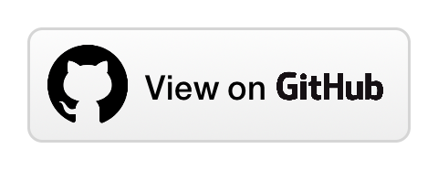
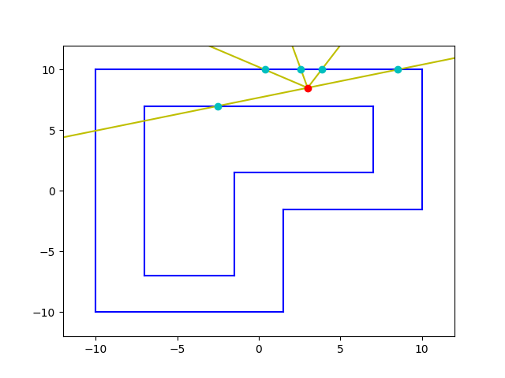
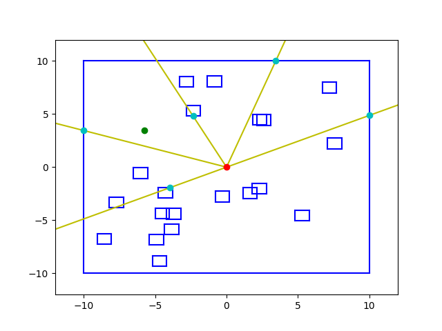

Navigation Environment for OpenAI Gym
The navigation environment is a single-agent domain featuring discrete action-space and continuous state-space. It is a simulation of the autonomous navigation problem in robotics.
Description
The environment provides two tasks:
Navigation
The goal of this environment is to navigate a robot on a track without crashing into the walls. Initially, the robot is placed randomly into the track but at a safe distance from the walls. The state-space consists of 5 range measurements. The action-space consists of 3 actions (move_forward, rotate_left, rotate_right). Furthermore, both actions and states have additive white Gaussian noise. The robot is rewarded +5 for moving forward and -0.5 for rotating. If the robot crashes into the wall it is penalized with -200.
NavigationGoal
The goal of this environment is to navigate a robot to reach a goal location while avoiding the obstacles in the track. Initially, the robot is placed randomly into the track but at a safe distance from the obstacles. Both the goal and the obstacles change location in every episode. The state-space consists of 5 range measurements plus the distance and angle from the goal. The action-space consists of 3 actions (move_forward, rotate_left, rotate_right). Furthermore, both actions and states have additive white Gaussian noise. The robot is rewarded +200 for reaching the goal and -200 for crashing. Moreover, after each time step, the robot is rewarded or penalized proportionally to the difference between the current and previous step distances from the goal.
Getting Started
Prerequisites
The package was implemented and tested with Python 3.8 but previous versions can also be used.
The following libraries need to be installed:
- NumPy
- Matplotlib
- OpenAI Gym
Installation
Install the package with:
git clone https://github.com/NickGeramanis/gym-navigation
cd gym-navigation
pip3 install -e .
Usage
You can use these environments in order to test and compare different reinforcement learning algorithms.
You can create an instance of the environment with:
import gym
# Navigation Environment
env = gym.make('gym_navigation:Navigation-v0', track_id=1)
import gym
# NavigationGoal Environment
env = gym.make('gym_navigation:NavigationGoal-v0', track_id=1)
Currently, only one track has been implemented in each environment.
Furthermore, some unit tests have been implemented in folder
tests
to verify the proper functioning of the code.
About
Status
Under maintenance.
License
Distributed under the GPL-3.0 License. See
LICENSE
for more information.